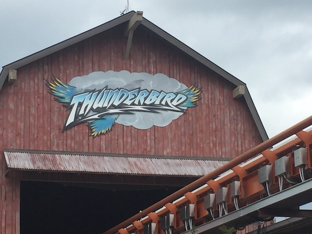
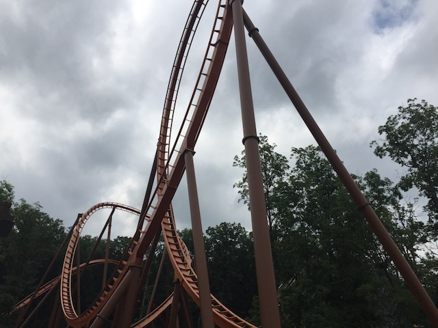

| |
Thunderbird Review

We're here at Holiday World. Today's ride we'll be reviewing for you is Thunderbird. This is another one of those B&M Wingriders, and you might be rolling your eyes, thinking to yourself "Oh great. Just another standard cookie cutter Wing Rider". Now that clearly isn't the case as this is a very special and unique B&M for one reason. It's their only launched coaster. I mean, yeah. There is the Incredible Hulk and yeah. That technically is a launched B&M. But this is the first coaster where B&M did the launch themselves. So yeah. That alone makes it ground-breaking for B&M. However, some enthusiasts, myself included prior to actually riding it, will still be rolling their eyes, thinking to themselves "Wonderful. A generic Wing Rider, only with a tame, gimmicky, launch attached to it". However, this is by far, the best B&M Wing Rider that I've ridden. It's not even close. It's definetly the best one. To see why, let's take a ride. We pull down the vest restraints (Thank god the choking problem isn't one this ride. Dollywood and Gardaland, please fix this ASAP!), and we're off. We roll a little bit, and come to a stop. We see some straight track, they have mist effects giving an elusive sense of mystery. OK, maybe not, but it is nice, and it does help cool us off in these hot summers. But enough of that, we go through the launch. And honestly, it's a pretty good launch. OK, it's far from the best launch ever. This isn't Xcelerator. But it's still a pretty good launch and definetly stronger than I was expecting. We then soar up into an Immelmann. It's fun, it's floaty, it's standard B&M. From there, we go right into a vertical loop. It's a decent vertical loop. Nothing crazy, but definetly not as floaty as the one on Wild Eagle. And this is where the ride really gets good. We then head up some curved hill before heading into a spiral drop. We maintain our speed here, and even get some forces. Yeah, one of the reasons I like Thunderbird so much is that it's not all floaty like all the other Wing Riders. It actually has some decent forces. And of course, the ride then goes through the exact same element. It's sort of like a non-inverting bowtie. Hey, it has some positive Gs, and even a couple mild laterals. I'll take it. Plus, we're just flying through the woods. I would say that this feels isolating, except...Voyage is right there. We then go through the Heartline Spin. Now, for as much as I've been praising Thunderbird, it is still important to note while this is more forceful and a step up from all the other Wing Riders, it still is a Wing Rider, and it's NOT on the same level as all the amazing B&Ms from the 1990s. So while this Heartline Spin is stronger than say, the one on Gatekeeper, it's still more on the floaty side and doesn't pack the same powerful punch as some of my favorite Heartline Spins. We then head through this sort of small wave hill, that while is fun, and does provide some forces, isn't the best. We then see a crappy little shed that we just plow through. TAKE THE SHE...*snap* There was a flash of light. I found the onride photo. We then go through a low to the ground helix, that does provide some forces. And then, OF COURSE!!! It wouldn't be a Wing Rider if it didn't have a Zero G Roll with a sort of near miss. Yep, we roll through that same shed, getting a near miss experience. And of course, it's very floaty. Thunderbird has the shed. Raptor has the tree. Gatekeeper has the keyholes. Wild Eagle is so far, the ONLY Wing Rider that doesn't have that gimmick. But hey. It's got some hangtime. And I'm happy to have some floaty elements on the ride as well. Unfortunetly, this ride does have one problem. It's short. Which is a real bummer, because it's really good. OK. It's not B&Ms finest work, but by New B&M Standards, it's one of the better rides they've made recently. It has a good launch, and some floaty elements, but also some snappy elements with some forces. I really hope the Wing Riders that get built in the future are more like this, because Thunderbird is a real winner.
8/10
Location: Holiday World
Opened: 2015
Built by: B&M
Last Ridden: June 27, 2018
Thunderbird Photos




Home
|